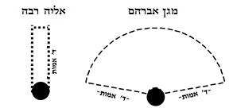
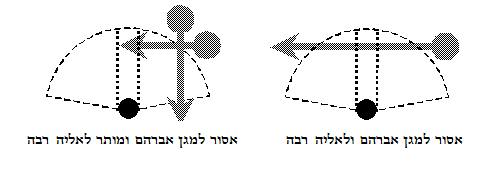
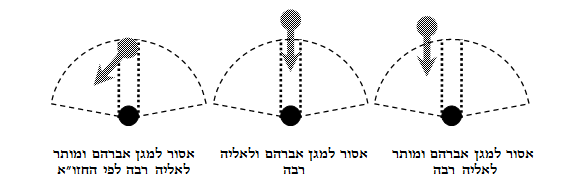

תפילת העמידה היא שיאה של התפילה, וכל החלקים שלפניה הם במידה רבה הכנות לקראתה; שהמתפלל עולה ממדרגה למדרגה, מקרבנות לפסוקי דזמרה, ומפסוקי דזמרה לברכות קריאת שמע, עד אשר הוא עולה ונכנס לשער העליון, לעולם האצילות, לעמוד לפני ה' בתפילה. ואמנם קריאת שמע היא מצווה מהתורה, וחובה לאומרה גם בלא קשר לתפילה, מכל מקום תקנו לאומרה עם ברכותיה לפני התפילה, כדי שיהוו הכנה לקראת התפילה. שמתוך דברי האמונה וקבלת עול מלכות שמיים שבקריאת שמע וברכותיה, ומתוך ברכת גאל ישראל, אפשר לעלות למדרגת התפילה באופן השלם ביותר.
כיוון שתפילת עמידה היא שיאה של התפילה, דיניה חמורים יותר. למשל - צריכים לבוא אליה בלבוש מכובד, מפני שבתפילת העמידה אנו עומדים לפני המלך; מה שאין כן בקריאת שמע וברכותיה, שבהם אנו מקבלים על עצמנו עול מלכות שמים ומשבחים לה', אבל איננו במדרגה של עומדים לפניו (שו"ע או"ח עד, ו; צא, א).
וכן הלכות רבות שלמדנו על המקום הראוי לתפילה, נאמרו בעיקר לגבי תפילת העמידה. כגון, שלא יתפלל על מקום גבוה, ושלא יתפלל במקום פרוץ, ושיהיו שם חלונות, ושמצווה להתפלל במניין ובבית הכנסת, ושיקבע מקום לתפילתו, ושלא יהיה דבר חוצץ בינו לבין הקיר, ושלא יתפלל בצד רבו ולא אחוריו (כמבואר לעיל בפרק ג). וכיוון שתפילת עמידה היא חלק מכלל התפילה, ממילא בכל משך התפילה משתדלים להקפיד על כל ההלכות הללו. אבל כאשר לא יכולים להתפלל פסוקי דזמרה וברכות קריאת שמע במקום המובחר, ישתדלו לכל הפחות להתפלל תפילת עמידה במקום המובחר.
נוהגים לפסוע שלוש פסיעות לקראת התפילה, כדי לבטא את הרצון להתקרב ולעמוד לפני ה' (רמ"א צה, א). ומי שכבר עומד במקום תפילתו, אינו צריך לילך לאחריו שלוש פסיעות כדי לחזור ולפסוע לקראת התפילה. כי בעצם זה שבא לבית הכנסת, כבר קרב עצמו לתפילה, ופסע לקראתה יותר משלוש פסיעות (אליה רבה). ויש אומרים שגם מי שכבר הלך למקום תפילתו, ראוי שסמוך לתפילת עמידה יחזור לאחריו ושוב יפסע לפניו שלוש פסיעות למקום התפילה (בא"ח בשלח ג; כה"ח צה, ז). והטוב ביותר להפסיק מעט בין הפסיעות אחורנית לפסיעות קדימה, כדי שלא יראה כמי שחוזר ובא. ולכן, כשיגיע ל"תהלות לא-ל עליון" יחזור לאחריו שלוש פסיעות, ולקראת סיום ברכת 'גאל ישראל' יפסע לפניו שלוש פסיעות. וכן במנחה וערבית, כבר בתחילת הקדיש שלפני התפילה יחזור לאחריו שלוש פסיעות, ולקראת התפילה יגש לפניו שלוש פסיעות (מנהג מהרי"ל, מ"ב צה, ג).
כדי שלא להפסיק בין גאולה לתפילה, ראוי להקפיד לפסוע את שלוש הפסיעות לפני סיום ברכת 'גאל ישראל', כדי שמיד אחר סיום הברכה כבר יעמוד במקום התפילה ויתחיל לומר: "ה' שפתי תפתח", שהוא הפסוק שפותח את התפילה.
לפני תפילת עמידה, צריך המתפלל להסיר ממנו את כל הדברים העלולים לטרוד את כוונתו. הסובל מנזלת, יקנח את אפו לפני התפילה, כדי שלא יצטרך לקנח את עצמו בשעת התפילה. ומי שיש לו ליחה בגרונו שעלולה להפריע לו, יוציאנה לפני התפילה, כדי שלא תטריד אותו בתפילה (שו"ע צב, ג. ועיין בפרק ו). ואם נצרך לקנח את אפו בתפילה, יעשה זאת בצורה המנומסת ביותר. ומי שנאלץ לפהק בתפילה - יניח ידו על פיו. שאדם העומד בתפילה צריך להזהר מאוד בכבוד שמים, וכל מה שנחשב כלא מנומס בפני בני אדם, אסור בשעת התפילה (עי' שו"ע צז, א-ב).
בכל חלקי התפילה יכול המתפלל להפנות את פניו לכל כיוון שירצה. אבל כיוון שיגיע לשיאה של התפילה, ויקום לעמוד לפני מלכו של עולם בתפילת עמידה, יכוון את פניו לירושלים, למקום שבו בחר ה' להשרות את שכינתו בעולם.
היה עומד בחוץ לארץ, יכוון את פניו כנגד ארץ ישראל, ויכוון את ליבו לירושלים ולמקום המקדש ולבית קודש הקודשים. ואם היה עומד בארץ ישראל, יכוון את פניו כנגד ירושלים, ואת ליבו למקדש ולבית קודש הקודשים. היה עומד בירושלים, יכוון את פניו כנגד המקדש ואת ליבו לבית קודש הקודשים (ברכות ל, א; שו"ע צד, א).
לפיכך, העומדים ברחבת הכותל המערבי צריכים להפנות את עצמם בתפילת עמידה לכיוון מקום המקדש. כלומר, העומדים ברחבה הפתוחה, צריכים לצדד עצמם שמאלה, ואף העומדים בעזרת גברים במקום המקורה, יצדדו עצמם מעט שמאלה.
נהגו לבנות את ארון הקודש בצד הפונה לירושלים, כדי שהעומדים בתפילה יפנו גם לכיוון ארון הקודש. אמנם העיקר להתפלל לכיוון ירושלים, לכן, אם מחמת טעות או אונס ארון הקודש אינו מכוון ממש כנגד ירושלים, יכוונו המתפללים את פניהם כלפי ירושלים (מ"ב צד, ט). ואם כל הציבור טועים ופונים לכיוון ארון הקודש, מוטב שלא לפרוש מהציבור, ויעמוד לכיוון שהציבור עומד, אבל יפנה את ראשו כלפי ירושלים (מ"ב צד, י).
מי שאינו יודע היכן הצד הפונה לירושלים, יתפלל לכיוון שירצה, ויכוון את ליבו לאביו שבשמים (שו"ע צד, ג). ואף אם התברר לו שטעה, אינו צריך לחזור ולהתפלל לכיוון ירושלים.
בפסוקי דזמרה וברכות קריאת שמע רשאי אדם לישב או לעמוד, אבל כיוון שהגיע לתפילת שמונה עשרה, עליו לעמוד ברגליים צמודות. העמידה מבטאת את ההתייצבות המלאה של האדם, מראשו ועד רגליו, לקראת התפילה. בנוסף לכך, יש בעמידה ביטוי ליראה ולאימה של העומד לפני מלכו של עולם. ולכן צריך שלא להישען בתפילה על שום דבר, שכל הסומך עצמו במקצת, אינו עומד באימה. ובשעת הדחק, כגון מי שתשוש ומוכרח להישען, ישתדל להישען מעט, כך שגם אם תינטל פתאום המשענת, ישאר לעמוד בכוחות עצמו, שבאופן זה אף שאינו עומד באימה, מכל מקום הוא נחשב כמתפלל בעמידה (שו"ע צד, ח; מ"ב כב).
יצמיד את רגליו עד שייראו כרגל אחת, משום שפיסוק הרגליים חושף את הצד החומרי שבאדם, וגם מבטא את הריצה אחר ענייני העולם הזה. ולכן הכהנים בעלותם למזבח היו הולכים עקב בצד אגודל, וכן בתפילת עמידה אנו נמנעים מפיסוק הרגליים. ועוד, שהצמדת הרגליים מבטאת את אסיפת הכוחות המעשיים שברגלנו להתבטלות כלפיו, שאין לנו אלא רצון אחד, לעמוד לפניו בתפילה. ולמדו זאת מהמלאכים, שנאמר עליהם (יחזקאל א, ז): "וְרַגְלֵיהֶם רֶגֶל יְשָׁרָה", כלומר רגליהם צמודות עד שנראות כרגל אחת (ברכות י, ב; ירושלמי פ"א ה"א; מהר"ל נתיב העבודה ו').
צריך להצמיד את כפות הרגליים לכל אורכם, כדי שיראו עד כמה שאפשר כרגל אחת, ולא כאותם שמצמידים את העקבים בלבד (שו"ע צה, א, תר"י). בדיעבד, אם התפלל ברגליים פסוקות - יצא (מ"ב א, כה"ח ב).
חולה שאינו יכול לעמוד, יתפלל בישיבה. ואם גם לשבת אינו יכול, יתפלל בשכיבה. ואמנם לדעת כמה פוסקים, אם לפני שיסתיים זמן אותה תפילה יתחזק ויוכל לעמוד, יצטרך לשוב ולהתפלל בעמידה, מפני שעיקר מצוות התפילה בעמידה (שו"ע צד, ט). מכל מקום הסכמת האחרונים למעשה, שאם התפלל בישיבה או בשכיבה, יצא בדיעבד, וגם אם יוכל אח"כ לעמוד - אינו צריך לחזור ולהתפלל בעמידה (מ"ב צד, כז, כה"ח לד).
גם מי שנאלץ להתפלל בישיבה או בשכיבה, ישתדל להצמיד את רגליו ולכוף עצמו במקום הכריעות. ומי שיושב בכסא גלגלים, כשיסיים את תפילתו יסיע את עצמו מעט לאחריו, כשיעור שלוש הפסיעות שבהם נפרדים מהתפילה (ועיין בהמשך הלכה טז).
צריך המתפלל לכוף מעט את ראשו, שיהיו עיניו למטה דרך ענווה, ויחשוב כאילו הוא עומד בבית המקדש, ויכוון את ליבו למעלה לשמים (יבמות קה, ב; שו"ע צה, ב).
שבחו המקובלים את המתפלל בעיניים עצומות. אמנם גם מי שמסתכל בסידור נוהג לכתחילה. ורבים מהאחרונים המליצו להתפלל מתוך הסידור, שעל ידי כך יוכל לכוון יותר בתפילתו (מ"ב צה, ה; כה"ח ט-י; ועי' באו"ה בדברי המאמ"ר).
לגבי הידיים, כתב הרמב"ם (הל' תפילה ה, ד), שיניח ידיו על ליבו כשהן כפותות, יד ימין על יד שמאל, וכך יעמוד כעבד לפני רבו, באימה וביראה. וכך כתב השולחן ערוך (צה, ג), וכן מבואר בכוונות האר"י (כה"ח צה, יב). ורבים סוברים, שהכל תלוי במנהג המקום, ובמקומו של הרמב"ם אכן נהגו לעמוד לפני מלכים ושרים כפי שכתב, אבל במקומות אחרים נהגו אחרת. למשל, בארצות אדום נהגו לעמוד בידיים שלובות, ובארץ ישמעאל היו עומדים כשידיהם אחרי גבם, לרמוז כאילו אין להם ידיים בלא רשותו של מי שעומדים לפניו (מהר"י אבוהב הובא בב"י, מ"ב צה, ו). לפי זה בימינו, בנוסף לדרך שכתב הרמב"ם, אפשר גם לעמוד כשהידיים צמודות לגוף, או כשהן מונחות על הסטנדר, סמוכות לסידור, שגם זה נחשב כעומד דרך כבוד. אבל אין לעמוד כשהידיים בכיסים, או על המותניים, שאין ראוי לעמוד כך לפני אנשים מכובדים.
רבים נוהגים להתנענע בתפילה, וכתב הרמ"א (או"ח מח, מ"ב צה, ז) שכך ראוי לנהוג לכתחילה, כדי לבטא את ההתרגשות והרעדה שצריכה לאחוז במתפלל, וכדי לשתף את כל הגוף בעבודת התפילה, כדברי הפסוק (תהלים לה, י): "כָּל עַצְמוֹתַי תֹּאמַרְנָה ה' מִי כָמוֹךָ". לעומת זאת השל"ה כתב, שאין להתנדנד בתפילה, ולהפך, דווקא העמידה בלא תנועה מגבירה את הכוונה. ועוד, שאין דרך כבוד לעמוד ולהתנועע, ואם יבוא אדם לפני מלך בשר ודם ויתחיל להתנדנד בכל גופו, הרי המלך יגרשנו מיד מעל פניו, ואם כן ודאי שאין לנהוג כך בתפילה. ומה שאמרו שטוב להתנועע, הוא דווקא בעת שלומדים תורה או בעת שאומרים שירות ותשבחות, אבל בתפילת עמידה שבה אנו עומדים לפני המלך, והיא עמוקה ופנימית, אין ראוי להתנועע כלל, רק שפתיו נעות (של"ה מסכת תמיד נר מצווה). וכיוון שלכל מנהג יש על מה לסמוך, ינהג כל אדם כפי שיוכל לכוון יותר. ובמיוחד שמי שהתרגל להתנועע כמקובל, יקשה עליו לכוון בלא שיתנועע (מ"א, מ"ב מח, ה; ועי' כה"ח מח, ז-ט).
בחמישה מקומות תקנו חכמים לכרוע בתפילה, בתחילת ברכת 'אבות' ובסופה, בתחילת ברכת 'מודים' ובסופה, ובסיום התפילה בעת שיפסע לאחריו שלוש פסיעות. ותקנו לכרוע בשתי ברכות אלו, שהן החשובות ביותר, ובהן צריך להשתדל יותר לכוון (עי' שו"ע קא, א; מ"ב ג). ואם בא לכרוע בתחילת ברכה אחרת או בסופה, מלמדים אותו שלא יכרע, כדי שלא יעקור את תקנת חכמים, ושלא יראה כמתגאה שמחזיק עצמו צדיק מאחרים. אבל באמצע הברכות, מותר לכרוע (שו"ע קיג, א; מ"ב ב).
יכרע כשיאמר "ברוך אתה", ויזקוף כשיאמר ה'. ובמודים, כורע כשיאמר "מודים אנחנו לך", ומזדקף כשיאמר ה' (שו"ע קיג, ז; מ"ב יב. על הכריעה שבסיום התפילה עיין בהמשך הלכה יג).
הכריעה צריכה להיות עד שיתפוקקו כל החוליות שבשדרה, כלומר שהחוליות שבעמוד השדרה יבלטו בגבו. ויכוף את ראשו וגבו עד שפניו יגיעו לגובה שבין ליבו למותניו, אבל לא יכוף ראשו עד חגורתו, שנראה כיוהרא. וזקן או חולה שקשה לו להתכופף, ירכין את ראשו כמידת יכולתו (שו"ע קיג, ה). ויכרע במהירות, להראות את השתוקקותו לכרוע לפני ה' יתברך, וכשיזדקף - יזדקף לאט, כמי שמעוניין להמשיך לכרוע לפניו (שו"ע קיג, ו).
שני מנהגים באופן הכריעה: למנהג אשכנזים, בשעה שאומר "ברוך" יכרע בברכיו, וכשיאמר "אתה" ישחה עד שיתפוקקו החוליות. וב'מודים', שאין אומרים בתחילה "ברוך", ישחה מיד בלא לכופף תחילה את הברכיים (מ"ב קיג, יב; ועי' קצוש"ע יח, א).
והספרדים נהגו על פי האר"י לכרוע בשני שלבים, בתחילה יכפוף את גופו (בלא לכרוע בברכיו) ואח"כ את ראשו, וכן כשהוא מזדקף, בתחילה יזקוף את גופו ואח"כ את ראשו (כה"ח קיג, כא).
כמה וכמה הלכות גדולות למדנו מן הדרך שבה התפללה חנה, שעמדה ובקשה מה' שיפקדנה בבן, ונתקבלה תפילתה וזכתה ונולד לה שמואל הנביא, שהיה גדול נביאי ישראל אחרי משה רבנו ע"ה. וכך נאמר על תפילתה (שמו"א א, יג): "וְחַנָּה הִיא מְדַבֶּרֶת עַל לִבָּהּ, רַק שְׂפָתֶיהָ נָּעוֹת וְקוֹלָהּ לֹא יִשָּׁמֵעַ", אמרו חכמים: "מְדַבֶּרֶת עַל לִבָּהּ - מכאן למתפלל צריך שיכוון ליבו, רַק שְׂפָתֶיהָ נָּעוֹת - מכאן למתפלל שיחתוך בשפתיו, וְקוֹלָהּ לֹא יִשָּׁמֵעַ - מכאן שאסור להגביה קולו בתפילתו" (ברכות לא, א).
עניינה של תפילת עמידה, לבטא לפני ה' את השאיפות העמוקות של הנשמה, ולכן אין ראוי לאומרה בקול ולחושפה כלפי חוץ. ומאידך, אין יוצאים ידי חובת התפילה בהרהור בלבד. מפני שלכל רצון טוב צריך להיות איזה ביטוי ממשי בעולם הזה, כדי שיוכל לצאת אל הפועל, ולתקן בכך את העולם. ולכן גם מצוות התפילה שהיא פנימית ועדינה ביותר צריכה ביטוי כלשהו, על ידי חיתוך המילים בשפתיים.
נחלקו המנהגים בשאלה, כיצד ראוי להתפלל בלחש. לדעת רוב פוסקי ההלכה ומקצת המקובלים, צריך המתפלל להשמיע את קולו לאוזנו, באופן שרק הוא ישמע את קולו, אבל שכניו שלצידו לא ישמעוהו (שו"ע קא, ב; מ"ב ה-ו). ולדעת רוב המקובלים, התפילה כל כך עמוקה ופנימית עד שאפילו לאוזנו לא ישמיע המתפלל את קולו, אלא רק יחתך את האותיות בשפתיו (כה"ח קא, ח). וראוי שכל אדם ינהג כמנהג אבותיו או כפי שיכוון יותר.
בדיעבד, גם אם השמיע את קולו בתפילתו, יצא ידי חובה. ולכן מי שמתקשה לכוון בלחש, אם הוא נמצא ביחידות, רשאי להתפלל בקול. אבל בציבור, בכל מקרה לא יתפלל בקול, כדי שלא יפריע לשאר המתפללים (שו"ע קא, ב). ומוטב שיתפלל במניין בלחש, אע"פ שיכוון פחות, שהתפילה במניין מתקבלת (מ"ב קא, ח).
בשאר חלקי התפילה, כברכות קריאת שמע ופסוקי דזמרה, שאינם פנימיים ועמוקים כתפילת עמידה, לכל הדעות צריך המתפלל להשמיע את קולו לאוזנו. ואת הפסוק הראשון של קריאת שמע אף נוהגים לומר בקול רם, כדי לעורר את הכוונה (שו"ע סא, ד). וכן עונים 'אמן' ו"ברוך הוא וברוך שמו" בקול. ובמיוחד על הקדיש יש להשתדל לענות בקול רם (שו"ע נו, א).
להלכה אפשר להתפלל בתרגום ללשונות זרות (סוטה לב, א), אולם מצווה מן המובחר להתפלל בעברית, שבה חיברו אנשי כנסת הגדולה את נוסח התפילה, והיא לשון הקודש, ובה נברא העולם (עיין לעיל טו, ט, שכן הדין גם בקריאת שמע).
ואמנם לדעת הרי"ף, רק המתפלל במקום שיש בו מניין רשאי להתפלל בשפה אחרת, מפני שהשכינה שורה שם, ותפילתו תתקבל אף שאינה בלשון הקודש; אבל אם יתפלל ביחיד בשפה אחרת, תפילתו אינה מתקבלת. מכל מקום דעת רוב הפוסקים כדעת הרא"ש, שגם ביחידות אפשר להתפלל בשפה אחרת, ורק בשפה הארמית אין להתפלל ביחידות, וכך נפסק להלכה (שו"ע קא, ד, כפי הכלל שהלכה כי"א בתרא, מ"ב יח).
עוד יתרון לתפילה בעברית, שהמתפלל בה אף שאינו מבין אותה, כל זמן שהוא מבין את הפסוק הראשון של קריאת שמע ואת הברכה הראשונה של תפילת עמידה - יצא ידי חובתו. מה שאין כן בשפה אחרת, שרק המבין אותה, יוצא בה ידי חובתו (מ"ב קא, יד; קכד, ב. עיין לעיל א, י).
למעשה, מי שאינו מבין עברית, רשאי לבחור כיצד להתפלל, מצד אחד יש יתרון לתפילה בשפה שהוא מכיר, שבה יוכל לכוון יותר; ומצד שני, אם יתפלל בעברית, תהיה בידו מעלה שהתפלל בלשון הקודש (עי' באו"ה קא, ד, כה"ח טז).
וכל ההיתר להתפלל בשפות אחרות הוא רק כהוראת שעה, למי שאינם מבינים עברית. אבל אסור לסדר מניין שיתפלל תמיד בשפה זרה. וזה היה אחד מחטאיהם של הרפורמים, שתרגמו את התפילה לגרמנית והשכיחו מבניהם את לשון הקודש, ובזה פתחו להם פתח רחב לעזיבת היהדות ולהתבוללות (חת"ס או"ח פד, פו; מ"ב קא, יג; ובשרידי אש א, ט, אוסר אפילו פיוט אחד בלעז).
המתפלל צריך שיכוון, היינו שישים לב למה שהוא אומר, וכן ישתדל שלא להסיח את דעתו לדברים אחרים בתוך התפילה. ואם עלו במוחו מחשבות אחרות, יסלקם מדעתו ויחזור להתפלל. ואף אם אינו מצליח לכוון בכל המילים, ישתדל לכל הפחות לכוון בחתימת כל ברכה וברכה. ואם אינו יכול לכוון בכל הברכות, יתאמץ לכוון בברכת 'אבות' ובברכת 'מודים', שהן הברכות שכורעים בתחילתן וסופן. ולכל הפחות יכוון בברכת 'אבות' שהיא פותחת את התפילה.
ואם התפלל ולא כיוון בברכת 'אבות', מעיקר הדין היה צריך לחזור ולהתפלל, שהכוונה בברכת 'אבות' מעכבת. אלא שבעקבות ירידת הדורות וטרדות הנפש, נחלשה יכולתנו לכוון, ולכן הורו האחרונים שלא יחזור, מפני שיש לחוש שאף בפעם השנייה ישכח לכוון ב'אבות' וחזרתו תהיה בחינם (רמ"א קא, א, כה"ח ד).
ומי שעומד לסיים את ברכת 'אבות' ושם לב שלא כיוון בה, כל זמן שלא אמר את שם ה' בחתימתה, יחזור מ"אלוהי אברהם" ויכוון (מ"ב קא, ד, בשם ח"א). ואם אמר שם ה', יחתום את הברכה בכוונה, וטוב שיחזור להרהר בליבו את ברכת 'אבות', שלדעת הרמב"ם הרהור נחשב כדיבור. ואם כבר המשיך לומר "אתה גיבור" - ימשיך בתפילתו, וישתדל לכוון בהמשך בכל הברכות ובמיוחד בברכת 'מודים'.
תפילת שמונה עשרה נחלקת לשלושה חלקים: שבחים, בקשות והודאה. בשלוש הברכות הראשונות אנו דומים לעבד שמסדר שבח לפני רבו, באמצעיות לעבד שמבקש בקשות מרבו, ובשלוש האחרונות, לעבד שקיבל פרס מרבו ונפטר והולך לו (ברכות לד, א).
ודבר זה למדנו מתפילתו של משה, שפתח בשבחים ומתוך כך המשיך להתחנן ולבקש (ברכות לב, א; ועי' לעיל יד, א, בהל' פסוד"ז). בלא הקדמת השבחים יש חשש שתפילתנו תדמה לפולחנם של עובדי עבודה זרה, שכל מגמתם לתמרן באופן מאגי את הכוחות העליונים לתועלתם. אבל אנחנו רוצים לעבוד את ה' ולהידבק בו בתפילתנו, ומבקשים שישפיע לנו טובה וברכה כדי שנוכל לקיים את התורה והמצוות בשלימות ולגלות את שמו בעולם. ולכן תחילה עלינו לדעת לפני מי אנחנו עומדים בתפילה, לפני הא-ל הגדול הגיבור והנורא, מכלכל חיים ומחייה מתים, הא-ל הקדוש, ומתוך כך נוכל לבוא ולבקש בלב טהור על כלל ישראל ועלינו.
ואכן בחלק הבקשות, שיש בו שלוש עשרה ברכות, באות לידי ביטוי כלל השאיפות של עם ישראל, שאינן מכוונות לקידום ענייניו האישיים של המתפלל, אלא עיקרן בקשות על גילוי כבוד ה' בעולם. ומתוך כך מובן שגם הבקשות האישיות על רפואה ופרנסה הן כדי שנוכל גם אנחנו להשתתף בתיקון העולם. ואלו הן שלושה עשר הנושאים שעליהם אנחנו מבקשים: חכמה, תשובה, סליחה, גאולה, רפואה, פרנסה, קיבוץ גלויות, החזרת המשפט, כילוי השונאים, ולעומתם ברכת הצדיקים, בניין ירושלים, מלכות בית דוד, ולבסוף על שמיעת התפילה.
לאחר הבקשות אנו חותמים את התפילה בשלוש ברכות כלליות, שבמרכזן ברכת ההודאה על חיינו ועל כל הטובות שה' מטיב לנו בכל עת. ועימה עוד שתי ברכות, לפניה אנו מתפללים על החזרת העבודה לבית המקדש, ולבסוף על השלום, שהשלום הוא הכלי שמחזיק את כל הברכות.
כאן המקום לציין, שלמעשה בתפילת שמונה עשרה ישנן תשע עשרה ברכות. אלא שבתחילה, כשתקנו אנשי כנסת הגדולה את התפילה, היו בה שמונה עשרה ברכות, ואחר התרבותם של המלשינים והמוסרים, עקב עלייתה של הנצרות שהטיפה לשנאת ישראל, תקנו חכמים ברכה נוספת, על הצלתה של האומה מידי המינים והמלשינים.
בנוסח התפילה, כללו אנשי כנסת הגדולה בחכמתם וברוח קודשם את כל השאיפות האידיאליות של עם ישראל. ודקדקו בכל מילה ומילה עד שתיקנו נוסח מושלם שעל ידו יכולה הנשמה הישראלית להשתפך לפני בוראה באופן המרומם ביותר.
ואע"פ כן, אם ירצה אדם להוסיף בקשות משלו בברכות האמצעיות - רשאי, אבל בשלוש הברכות הראשונות שנועדו לשבחי ה', ובשלוש האחרונות שנועדו להודאה, אסור לערב בקשות פרטיות, כדי שלא לטשטש את עניינן הכללי (שו"ע קיב, א; קיט, א).
והבקשות האישיות שאפשר להוסיף בברכות האמצעיות צריכות להיות מעין עניינה של הברכה. למשל, אם היה לו חולה בביתו, יכול לבקש עליו בברכת רפאנו. ואם היה צריך לפרנסה, יבקש בברכת השנים. ואם רוצה שקרובו יעלה לארץ, יבקש עליו בברכת מקבץ נדחי ישראל. ומיוחדת היא ברכת שומע תפילה, שבה אפשר לבקש את כל סוגי הבקשות, שכיוון שהיא חותמת את ברכות הבקשה, היא כוללת את כולן. וכשיבוא להוסיף בקשה משלו, יפתח קודם בנוסח הקבוע, ולפני משפט החתימה, יוסיף את בקשתו.
ולא רק שמותר לאדם לבקש בקשות אישיות בתפילה, אלא שלדעת רבים אף רצוי שהמתפלל יוסיף בקשות משלו, מפני שהתפילות האישיות שאדם אומר בלשונו, יוצאות מעומק הלב ומעוררות את הכוונה. אלא שרצוי לא להאריך בבקשות פרטיות בתוך התפילה, ואפילו לא בשומע תפילה, מפני שעיקר נוסח התפילה מכוון לענייני הכלל, וכשמרבים בבקשות פרטיות בתוך התפילה, האופי הכללי שלה מתבטל. ומי שנדבו ליבו להרבות בתפילות אישיות, יותר טוב שיבקשם אחר שיסיים את הברכות ויאמר "יהיו לרצון" וכו', שכל מה שהוא אומר אח"כ כבר אינו מעיקר התפילה, אבל הוא תוספת השייכת לתפילה, שכל זמן שלא פסע שלושה צעדים לאחור, עדיין הוא עומד לפניו יתברך בתפילה (שו"ע או"ח קיט, ב, מ"ב קיט, יב).
צריך אדם לפרש את בקשותיו בתפילה כראוי. ולכן המבקש על חולה, נכון להזכירו בשמו. לכתחילה טוב להזכיר את החולה בשמו ובשם אימו או אביו. אמנם אם החולה לידו, אינו צריך להזכיר את שמו, כי ברור שעליו הוא מתפלל (מ"ב קיט, ב).
בפסוק "יהיו לרצון אמרי פי והגיון ליבי לפניך ה' צורי וגואלי" שאומרים אחר הברכה על השלום אנו מסיימים את עיקר התפילה. ואם שמע קדיש או קדושה בין הברכה לפסוק, לא יענה, מפני שהפסוק מכלל התפילה (שו"ע ורמ"א קכב, א).
מתחילת "א-לוהי נצור" ועד "יהיו לרצון" שבסופו, מותר לענות לקדיש, קדושה, ברכו ומודים, כיוון שכבר סיים את עיקר התפילה. אבל כיוון שעוד לא סיים לגמרי את תפילתו, דינו כדין הנמצא באמצע ברכות קריאת שמע ואסור לו להפסיק כדי לענות אמן על ברכות וכיוצא בזה (שו"ע שם; עיין לעיל טז, ה).
וכפי שלמדנו, זה המקום להאריך בתחנונים ובקשות כפי שירצה, וכן אמרו על רבי עקיבא, שכשהיה מתפלל ביחידות היה מאריך מאוד בתחנונים שאחר התפילה (עי' ברכות לא, א).
לאחר שיסיים את התחנונים, יאמר שוב "יהיו לרצון", ויפסע לאחריו שלוש פסיעות. ואם אינו יכול לפסוע לאחריו, מפני שזה שאחריו עדיין עומד בתפילתו, אף שעדיין לא נפרד מהתפילה, מכל מקום כיוון שכבר סיים את התחנונים שאחר התפילה, יענה בקול על כל דבר שבקדושה, ואפילו "ברוך הוא וברוך שמו". וכן רשאי להמשיך להתפלל, ולומר 'אשרי' ו'עלינו לשבח', או לומר תהלים או ללמוד (עיין בהמשך סוף הלכה כ).
לאחר סיום התפילה, יכרע עד שיתפוקקו חוליות שבשדרתו, ויפסע לאחריו בכריעה שלוש פסיעות, ואח"כ בעודו כורע יפנה לצד שמאל ויאמר: "עושה שלום במרומיו", ויפנה לצד ימין ויאמר: "הוא יעשה שלום עלינו", ואח"כ ישתחווה לפניו ויאמר: "ועל כל ישראל ואמרו אמן", ויזדקף. ורבים נוהגים לומר אח"כ "יהי רצון" על בניית בית המקדש, שהתפילה כנגד קרבן התמיד, ולכן אנו מבקשים שיבנה בית המקדש ונוכל להקריב בו את קרבן התמיד (שו"ע רמ"א קכג, א).
אמרו חכמים, שהמתפלל ולא נפרד מהתפילה כראוי בשלוש פסיעות לאחריו ובאמירת "עושה שלום", ראוי לו שלא התפלל (יומא נג, ב). מפני שאם לא נפרד כראוי, משמע שלא הבין שעמד לפני מלך מלכי המלכים הקב"ה, ונמצא מבזה את התפילה.
כשיפסע, יעקור תחילה את רגל שמאל, שהיא הרגל החלשה, ובכך יראה שקשה עליו הפרידה מהתפילה. וכל פסיעה תהיה כשיעור כף הרגל, שיהיה אגודלו בצד עקבו. וכך הוא סדר הפסיעות: יפסע תחילה ברגל שמאל פסיעה קטנה, כדי שרגל שמאל תעמוד אחר רגל ימין. אח"כ יפסע בימין פסיעה גדולה יותר, כדי שרגל ימין תעמוד אחר רגל שמאל. ולבסוף יפסע ברגל שמאל פסיעה קטנה, כדי להשוות את רגליו. וכך יעמוד ברגליים צמודות בעת שיאמר "עושה שלום".
יקפיד שלא לפסוע פסיעה קטנה מעקב לצד אגודל, כי יש סוברים שבפחות מזה אינו נחשב פסיעה (מ"א). וכשאין לו מקום לפסוע שלוש פסיעות לאחריו, יפסע לצדדיו, כדי שיהיה בכל פסיעה שיעור עקב בצד אגודל (ערוה"ש קכג, ה). בשעת הדחק, כשאין לו מקום לפסוע לאחריו ולצדדיו, יסמוך על הסוברים שאפשר להסתפק בשלוש פסיעות קטנות יותר. אבל לא יפחות משלוש פסיעות שבהן יפרד מהעמידה לפני המלך (ב"ח, ועי' מ"ב קכג, יד). וכן לא יפסע יותר משלוש פסיעות, מפני יוהרא (שו"ע קכג, ד). וכן ראוי שלא לפסוע פסיעות גדולות, שלא יראה כרוצה להתרחק מהמלך (רמ"א קכג, ג, ועי' מ"ב טז).
אחר שפסע שלוש פסיעות לאחריו, ישאר לעמוד, ולא יחזור מיד למקום תפילתו. ואם חזר, הרי הוא דומה לכלב השב על קיאו (יומא נג, א). מפני שאחר שנפרד מלפני המלך הוא חוזר ובא לעמוד לפניו באפס מעשה, ומראה בעצמו שלא הבין שבעת התפילה עמד לפני המלך ובשלוש הפסיעות נפרד מלפניו, ולכן מעשהו מגונה. ויש שמוסיפים לטעות ואחר שהם חוזרים למקומם מגביהים עצמם מעט כמו בקדושה, ואין בזה שום טעם.
לכתחילה יעמוד במקום שכלו פסיעותיו עד שיגיע החזן לקדושה, ולכל הפחות עד שיתחיל החזן את חזרת הש"ץ (שו"ע קכג, ב). לדעת רוב הפוסקים, אין צריך להישאר ברגליים צמודות אחר שסיים לומר "עושה שלום" (מ"ב קכג, ו, באו"ה ושעה"צ שם). ויש אומרים שטוב להישאר ברגליים צמודות עד שיחזור למקומו (קצוש"ע יח, יג. בכה"ח קכג, יא, הזכיר את שתי הדעות).
גם מי שמתפלל ביחידות, ראוי שלא יחזור מיד למקומו הראשון, אלא ימתין במקום שכלו פסיעותיו כשיעור שיגיע החזן לקדושה, שהוא כחצי דקה. ובשעת הדחק, אם הוא מוכרח לחזור למקומו, ימתין כשיעור מהלך ארבע אמות ויחזור (מ"ב קכג, יא; כה"ח כ). והחזן שצריך להתחיל חזרת הש"ץ, יכול לכתחילה להמתין במקום שכלו פסיעותיו כשיעור מהלך ארבע אמות בלבד, ואח"כ יחזור למקומו, מפני שאכן הוא ניגש להתפלל שוב חזרת הש"ץ (רמ"א קכג, ב). וכן מי שצריך להתפלל פעמיים לתשלומין, ימתין כשיעור ארבע אמות, ויחזור להתפלל (מ"ב קכג, יא).
בסיום חזרת הש"ץ, החזן אינו צריך לחזור שלוש פסיעות לאחריו, מפני שהסיום השלם של תפילתו הוא בקדיש תתקבל, שבו הוא מבקש שיתקבלו תפילותינו ובקשותינו, ובסיומו פוסע שלוש פסיעות ואומר "עושה שלום" (שו"ע קכג, ה). ואף שבשחרית אומרים לפני כן תחנון, אשרי ובא לציון, ובימי שני וחמישי קוראים בתורה, מכל מקום הפרידה מחזרת הש"ץ נעשית בקדיש תתקבל שנאמר אחר 'ובא לציון'. ולכן צריך החזן להקפיד שלא לדבר בין סיום חזרת הש"ץ ועד סיום קדיש תתקבל (מ"ב קכג, יח).
אדם העומד בתפילה לפני בוראו, אסור לו לדבר באמצע התפילה בדברים אחרים (עיין בהמשך יח, 1). ואפילו להפסיק בהליכה או ברמיזה אסור. וקל וחומר הוא, שאם לפני מלך בשר ודם עומדים ברעדה ונזהרים שלא להפסיק בדברים אחרים, על אחת כמה וכמה שהעומד לפני מלך מלכי המלכים צריך להיזהר בזה.
אפילו מלך ישראל ישאל בשלומו באמצע תפילתו - לא ישיבנו. אמנם אם מלך גוי שעלול להורגו פונה אליו באמצע תפילתו - יפסיק, שפיקוח נפש דוחה תפילה (ברכות ל, ב). ואם נחש שאינו ארסי כרוך על עקבו - לא יפסיק בתפילתו, ואם מדובר בעקרב או נחש שיתכן שהם ארסיים - יקרא לעזרה, שספק פיקוח נפש דוחה תפילה (ברכות לג, א; שו"ע או"ח קד, א-ד).
והליכה אינה נחשבת להפסקה גדולה, ולכן אם קשה לו לכוון במקום שבו התחיל להתפלל, יכול ללכת למקום אחר. למשל, אם נחש שאינו ארסי מתקרב אליו, והדבר טורד את כוונתו, אף שאין בכך פיקוח נפש, רשאי ללכת למקום אחר כדי להמשיך להתפלל שם בכוונה (מ"ב קד, י). וכן אם עומדים סביבו אנשים או ילדים שמדברים עד שאינו יכול לכוון, אם יוכל לרמוז להם והם ישתקו, מוטב שירמוז להם, שהרמיזה נחשבת הפסקה קלה יותר. אבל אם לא ישמעו לו, ילך למקום אחר וימשיך להתפלל. וכן רב שממתינים לו עד שיסיים את תפילתו, והדבר טורד את כוונתו, רשאי לרמוז להם שיתחילו בחזרת הש"ץ (מ"ב קד, א).
וכן אם ילדו החל להפריע באמצע התפילה, עד שהוא או מתפללים אחרים אינם יכולים לכוון כראוי, ירמוז לו שיצא, ואם אינו מבין, יוציאו מבית הכנסת בלא לדבר, וימשיך בתפילתו.
ואם בתוך תפילתו ארעה תקלה, שאם לא יתקנוה מיד יגרם לו הפסד, לא יפסיק (מ"ב קד, ב; כה"ח ו). אבל אם הדבר מטרידו עד שאינו יכול לכוון, רשאי ללכת לתקן את התקלה.
אם נפל סידור לארץ, ואינו יכול לכוון כל זמן שאין מרימים אותו, יסיים את הברכה שנמצא בה, וילך להרימו. ואם התחיל להתפלל על פה והתבלבל ואינו יכול להמשיך, ילך לקחת סידור וימשיך בתפילתו (מ"ב צו, ז). ואם באמצע התפילה נסתפק באיזה דין שאולי מעכב את התפילה, כגון ששכח לומר דבר מה ואינו יודע מה עליו לעשות, ילך לעיין בספר כדי לדעת כיצד לנהוג. ואם אינו יודע לעיין בספר, יש אומרים שרשאי אף להפסיק בדיבור כדי לברר את ההלכה (מ"ב קד, ב). ואם באמצע תפילתו הטלפון מצלצל, ימשיך בתפילתו. ואם אינו יכול להמשיך לכוון, רשאי ללכת לנתק את הטלפון ולחזור לתפילתו.
נשמטה טליתו ממנו באמצע התפילה, אם עדיין חלקה מונח עליו, רשאי לסדרה. אבל אם נפלה כולה, אסור לו לחזור להתעטף בה, משום שפעולת ההתעטפות מהווה הפסק (שו"ע צז, ד). ואם חסרון הטלית מטריד אותו כל כך עד שאינו יכול לכוון, יתעטף בה כשיסיים את הברכה שנמצא בה (מ"ב צז, טז). ומותר לאדם אחר שראה שהטלית נפלה מחבירו להניחה עליו בחזרה (כה"ח כז).
העומד בתפילתו ושמע קדיש או קדושה, אסור לו לענות. אבל יכול לשתוק ולכוון למה שהשליח ציבור אומר, ויחשב לו כמי שאמר בעצמו. ואם ההפסקה בתפילתו מפריעה לכוונתו, עדיף שימשיך להתפלל.
הנוסע לדרכו ברכב והגיע זמן תפילה, אם הוא נוהג, אסור לו להתפלל תוך כדי נסיעה, מפני שלא יוכל לכוון כראוי, ואף יש בזה חשש פיקוח נפש. לכן יעצור את מכוניתו בצד, ויתפלל.
אבל אם חבירו נוהג, והוא או חבירו ממהרים להגיע למחוז חפצו, יתפלל בישיבה. מפני שאם יעצרו את נסיעתם כדי להתפלל בעמידה, יהיה טרוד לסיים את תפילתו במהירות, ולא יוכל לכוון כראוי. לכן מוטב שיתפלל שמונה עשרה בישיבה, שכבר למדנו (בהלכה ד) שבדיעבד המתפלל בישיבה יצא ידי חובתו.
ואף שהוא מתפלל בישיבה, יצמיד את רגליו (מ"ב צה, ב), וישתדל להפנות את פניו לכיוון ירושלים (מ"ב צד, טו), ובמקומות שאמרו חכמים לכרוע, יזדקף מעט ויכרע כפי יכולתו (שו"ע צד, ה; ערוה"ש יח).
ואם הוא נוסע באוטובוס או רכבת, שהמקום בהם מרווח יותר - אם יוכל לעמוד ולכוון כראוי, מוטב שיעמוד בתפילת שמונה עשרה; ואם העמידה תטריד את כוונתו - ישב ברגליים צמודות, ויקום כדי לכרוע, ושוב ישב; ובסיום תפילתו יעמוד ויפסע לאחריו שלוש פסיעות (עיין שו"ע צד, ה).
ואם הוא נוסע באוטובוס בלילה נסיעה ארוכה, ויודע שאחר שיסיים את נסיעתו ישאר לו זמן להתפלל ערבית, יתפלל אחר סיום הנסיעה (מ"ב פט, מב). אולם אם הוא יודע שאחר הנסיעה לא יכוון כראוי, מפני שיהיה עייף וירצה לסיים במהירות את תפילתו, רשאי להתפלל בתוך נסיעתו (עפ"י שועה"ר צד, ה).
וכל ההיתר להתפלל בישיבה וביחידות הוא רק בדרך ארעי, בעת נסיעה מיוחדת, או באונס גמור. אבל הנוסע בכל יום לעבודתו, אף שקשה לו למצוא זמן להתפלל בעמידה, כל זמן שאינו אנוס, אינו רשאי להקל להתפלל בקביעות בישיבה. ובאוטובוסים שסודרו במיוחד כדי שיוכלו להתפלל בהם בעמידה ובמניין - מותר להתפלל בקביעות. ואמנם מלכתחילה צריך להתפלל בבית כנסת מסודר, אבל אם אותם אנשים ממהרים לדרכם ולעבודתם, ויודעים שבבית הכנסת יתפללו בחיפזון ואילו באוטובוס יתפללו במתינות, מוטב שיתפללו באוטובוס זה.
לרוב חשיבותה וקדושתה של תפילת עמידה, אסרו חכמים לשבת בתוך ארבע אמות של המתפלל, מפני שהעומד בתפילה עומד לפני השכינה, וכל המתיישב שם בבטלה נראה כמי שאינו מקבל עליו עול מלכות שמים, ומבזה את מקום התפילה.
אבל מי שעוסק באחד מחלקי התפילה, רשאי להתיישב ליד המתפלל עמידה, שהואיל והוא עוסק בתפילה, אינו נראה כמי שאינו מקבל עליו עול מלכות שמים. ויש אומרים, שגם מי שרוצה ללמוד תורה רשאי להתיישב ליד המתפלל. ובשעת הצורך, כגון שאינו יכול להתרכז בעמידה, רשאי להקל לשבת (שו"ע קב, א; מ"ב ו).
ואם ישב שם לפני שחבירו התחיל להתפלל עמידה לידו, אע"פ שאינו מתפלל ואינו לומד, רשאי להמשיך לשבת. מפני שאין בזה ביזוי לתפילה, אלא המתפלל הוא שעשה שלא כדין, שהתחיל להתפלל בתוך ארבע אמותיו. ואע"פ כן מידת חסידות שיתן כבוד לתפילה ויקום, או לפחות ילמד או יאמר תהלים (שו"ע רמ"א קב, ג).
אדם חלש, גם כשאינו עוסק בתפילה, רשאי להתיישב בתוך ארבע אמותיו של המתפלל, שהכל יודעים שמפני חולשתו נצרך להתיישב, ואין בכך פגיעה בכבוד שמים (שו"ע קב, ב). וביום הכיפורים, כמעט כולם נחשבים לחלשים מפני הצום, ורשאים להתיישב בתוך ארבע אמות של המתפלל (בית ברוך כו, ט).
יש מי שמחמיר וסובר שממש מול פני המתפלל אסור לישב, ואפילו מחוץ לארבע אמותיו, מפני שהמתפלל נראה כמשתחווה לו. ולכן אפילו אם הוא קורא קריאת שמע, וישב שם לפני שחבירו התחיל להתפלל עמידה, עליו לעמוד. ולכתחילה טוב לחוש לדעה זו (שו"ע קב, א, מ"ב ט; כה"ח י).
שיעור ארבע אמות הוא כשני מטרים. ליתר דיוק: אמה היא כשיעור זרועו של אדם ממוצע, והיא כ-45 סנטימטר, הרי שארבע אמות הן כ-180 סנטימטר (לשיעור עדכני. עיין פניני הלכה שבת ל, 1). אמנם ברור שאין צורך למדוד את המרחק מהמתפלל בסנטימטרים, אלא צריך כל אדם לנהוג כפי מה שישער בעיניו.
אסור לעבור לפני המתפלל בתוך ארבע אמותיו, מפני שהעובר לפניו עלול להפריע לו לכוון בתפילתו. ויש אומרים, שטעם האיסור, מפני שהמתפלל עומד לפני השכינה, והעובר לפניו פוגע בכבוד השכינה.
נחלקו הפוסקים בשאלה היכן בדיוק אסור לעבור, לדעת ה'אליה-רבה', האיסור הוא רק ממש מול פניו של המתפלל, שרק מי שעובר שם מפריע לו בתפילתו. כלומר, רוחבו של אדם בערך חצי מטר, לפיכך אין לעבור באותו חצי מטר שמול פניו עד למרחק של ארבע אמות (כשני מטר). ואילו לדעת ה'מגן-אברהם', בכל מקום שהמתפלל יכול לראות בתוך ארבע אמותיו - אסור לעבור, מפני שהעובר שם עלול להסיח מעט את דעתו של המתפלל.

עוד נחלקו, שלדעת ה'אליה-רבה', מותר לאדם לבוא ולעמוד לפני המתפלל בתוך ארבע אמותיו ולהישאר לעמוד שם. כי רק כשהוא חוצה את ארבע האמות שמול פניו, הוא מפריע לו בתפילתו, אבל אם הוא בא מהצד ונשאר לעמוד לפניו, אינו מפריע כל כך. ולדעת ה'מגן-אברהם', אסור לאדם להיכנס לתוך ארבע האמות שלפני המתפלל.
לכתחילה, יש להחמיר כדברי ה'מגן-אברהם', שלא לילך בכל ארבע האמות שלפני המתפלל. ובשעת הצורך, אפשר להקל כדברי ה'אליה-רבה', ומותר לעבור לצידו של המתפלל, וכן מותר לעבור ולעמוד ממול פניו.
ולצורך גדול מאוד, כשאין ברירה אחרת, מותר אף לעבור ממש לפני המתפלל. למשל, כדי להשלים מניין מותר לעבור לפני המתפלל. וכן מותר למי שצריך להעביר שיעור תורה, ולכהן שצריך לעלות לדוכן, לעבור לפני המתפלל. וכן מותר למי שחושש להפסיד את ההסעה שלו לעבור לפני המתפלל.
אבל מי שאיחר מעט לתפילה ורוצה להתפלל במקומו הקבוע, אסור לו לעבור לשם כך לפני המתפלל. ובצידי המתפלל, אם הוא מתפלל אחד, יוכל אם ירצה לסמוך על ה'אליה-רבה' ולעבור. אבל אם לשם כך הוא צריך לעבור בצידי כמה מתפללים, לא יעבור, מפני שקרוב לוודאי שיסיח מעט את דעתו של אחד מהם.
המתפלל במעבר - כיוון שנהג שלא כדין בזה שעמד במקום שמפריע למעבר הנכנסים והיוצאים, אין חובה להתחשב בו, ומותר בשעת הצורך לעבור כנגד פניו.
המסיים תפילת שמונה עשרה והיה אדם עומד אחריו בתפילה, אם הוא רחוק ממנו ארבע אמות ועוד שיעור שלוש פסיעות, כך שאם יפסע שלוש פסיעות לאחריו לא יכנס לתוך ארבע אמותיו - יפסע לאחריו. ואם הוא קרוב יותר, לא יפסע לאחריו עד שהמתפלל אחריו יסיים את תפילתו. ואפילו אם זה שעומד אחריו התחיל להתפלל מאוחר והוא מאריך בתפילתו, אסור לו להיכנס בפסיעותיו לתוך ארבע אמותיו. וכפי שלמדנו נחלקו האחרונים בגדר האיסור:
לדעת ה'מגן-אברהם', גם אם המתפלל אינו עומד ממש אחריו, כל זמן שבפסיעותיו הוא פוסע בתוך הרדיוס של ארבע האמות שלפניו, עליו להמתין עד שזה שאחריו יסיים את תפילתו. ולדעת ה'אליה-רבה', רק אם הוא עומד ממש לפניו אסור לו לפסוע לאחריו כנגד המתפלל, אבל אם זה שמתפלל אחריו אינו ממש כנגדו, מותר לו לפסוע שלוש פסיעות לאחריו. לכתחילה טוב לנהוג כ'מגן-אברהם', ובשעת הצורך אפשר להקל כדעת ה'אליה-רבה' (מ"ב קב, יח-יט). ואף במקרה שהמתפלל ממש מאחריו, בשעת הדחק יוכל לפסוע לאחריו באלכסון, מפני שיש מבארים שלדעת ה'אליה-רבה', כל זמן שאינו מתקרב בפסיעותיו אל המתפלל - מותר (בשם החזו"א, הובא בספר ד' אמות של תפילה עמודים נ', שסג, ועיין באש"י כט, ז, ושם לב, הערה עג).

ואם עומד בינו למתפלל מי שכבר סיים את תפילתו, רשאי לפסוע לאחריו, מכיוון שזה שסיים את תפילתו מהווה חציצה בינו למתפלל, למרות שזה שחוצץ עדיין לא פסע שלוש פסיעות.
בשעת הצורך אפשר להקל גם כאשר יש בין המתפלל לבינו מחיצה שגובהה לפחות עשרה טפחים (80 ס"מ), ורוחבה לפחות ארבעה טפחים (32 ס"מ). הרוצים להקל, רשאים להחשיב את הספסלים הגדולים והקבועים שבבתי הכנסת כמחיצה, הואיל וגובהם עשרה טפחים.
מי שאינו יכול לפסוע מפני המתפלל שאחריו, למרות שעדיין לא נפרד מהתפילה, רשאי לענות אמן ו"ברוך הוא וברוך שמו", ולומר את כל התפילות. ואם הגיעו לתחנון, רשאי להתיישב לאומרו, ונכון שלא ישב ממש מול פניו. ואח"כ יעמוד שוב במקומו, וכשהמתפלל שאחריו יסיים את תפילתו, יפסע שלוש פסיעות לאחריו ויאמר "עושה שלום" (מ"ב קכב, ד; ועי' קד, ט. ועיין לעיל הלכה יג).
כפי שלמדנו, לכתחילה ראוי להחמיר כדעת ה'מגן-אברהם', שלא לפסוע שלוש פסיעות בתוך ארבע אמות שלפני המתפלל, ואפילו אם אין המתפלל אחריו ממש כנגדו.
אבל לפעמים תפילתו של המאריך ניטרדת, מפני שאינו רוצה לעכב את המתפלל לפניו מלפסוע לאחריו שלוש פסיעות; וכאשר הממתין חש בזה, מוטב שינהג כדעת ה'אליה-רבה', שאם אינו ממש כנגדו יפסע לאחריו שלוש פסיעות.
וכן הרגיל להאריך בתפילתו רשאי לבקש מהמתפללים לפניו, שלא ימתינו לו עד שיסיים. ואזי יהיה מותר להם לפסוע לאחריהם מיד כשיסיימו את תפילתם. ומי שמתפלל ממש לפניו, יפסע באלכסון, כדי שלא לפסוע ממש כנגדו.
חזן שעומד אחריו אדם בתפילה, והגיע זמנו של החזן להתחיל את חזרת הש"ץ, ינהג כדעת ה'אליה-רבה', שכל זמן שאינו ממש כנגדו, יפסע לאחריו. ואם הוא ממש נגדו, יפסע באלכסון, ואח"כ יחזור למקומו כדי לומר את חזרת הש"ץ.
ככלל, ראוי לאדם שרגיל להאריך בתפילה, שלא יתפלל אחרי חבירו ויגרום לו צער. וכן יקפיד שלא להתפלל אחרי החזן או הרב ויטריחם להמתין עבורו (ועי' לעיל ג, ז, באיסור להתפלל אחרי הרב).
כשם שאסור לעבור כנגד המתפלל, כך אין לעבור לפני החזן בעת אמירת חזרת הש"ץ, ולפני מי שאומר קדיש (כה"ח נה, ט).
נחלקו האחרונים האם דין קטן שמתפלל כדין גדול, שאסור לפסוע לפניו ולשבת בתוך ארבע אמותיו (עיין בספר ד' אמות של תפילה עמ' רנד-רנז). וכיוון שדין זה מדברי חכמים, הלכה כדברי המקילים, והמהדרים מחמירים.